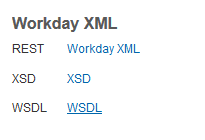
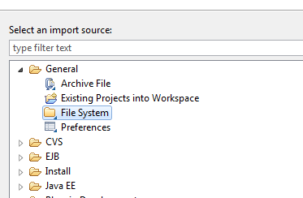
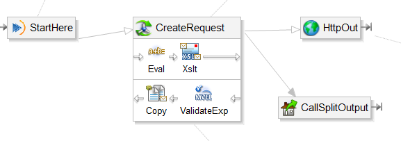
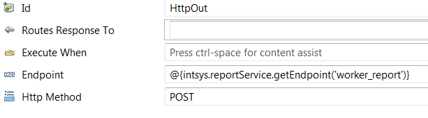
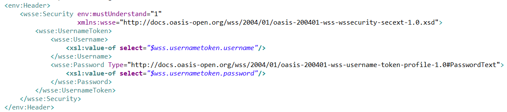
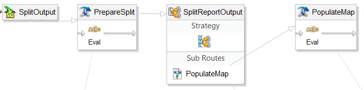

Why use SOAP for RaaS?
You may find yourself looping through a data set (such as an input file) amd performing some kind of input logic that requires data from a Workday custom report which accepts a particular object instance as a parameter. Generally, RaaS calls are expensive operations, and running a report for each individual worker/cost center/period/whatever can quickly become a pain point as your input set grows.
You're nearly always better off running a report once while passing every instance you'll need in a single call, and retrieving all the relevant data up front (if memory permits.) In the past year alone:
- One client saw run times on an inbound earnings integration decrease from over an hour to around 7 minutes by converting an existing looped single instance REST report call to a single multi-instance SOAP call.
- We saw another client's check print integration go from exceeding the two hour timeout to completing in under 30 minutes after converting to a single SOAP report call.
I should mention that it is technically possible to pass multiple instances inside a URL if you wanted to stick with the REST approach. For example, a multi instance worker report could be called with as below:
https://wd-url/ccx/service/customreport2/tenant/owner/Report_Name?Worker!WID=418b91b6b064104b21a9ee0d6c2498ab!6854645811284e8182713524d52a30ce
and with a list of Worker WIDs you could construct a URL in an eval step with something like this:
props['Worker_WIDs'] = lp.getReferenceDataList('Workers', 'WID')
props['report_url'] = intsys.reportService.getExtrapath('WorkerReport') + '?Worker!WID='
props['count'] = props['Worker_WIDs'].size() - 1
foreach(i: count) { props['report_url'] = props['report_url'] + '!' + props['Worker_WIDs'].get(i) }
but it's likely that you're going to run into URL length limitations. Most browsers limit URLS to around 2083 characters and while I haven't found anything published, I imagine Workday Studio's limit is around there as well; With 32 characters for each WID you're most likely going to hit that limit pretty quickly.
Fortunately, Workday RaaS also publishes reports as SOAP web services, in which request parameters can be sent in the message body. Message length is less of a concern (I know of one integration that sends a few thousand workers in a single report call) and it's easy to construct the request in an XSL or write step rather than a chain of eval statements.
How it's done
Start by creating a report and publishing it as a web service, as you would with an EIB or REST-based RaaS report. Off the reports related action, export and save the WSDL locally.

Open your studio project, and from the context menu on the project root folder, select 'Import->Import...' select on the following prompt, select 'File System' and click 'Next'.

Navigate to wherever you saved the WSDL earlier and select the file. Select your project root folder (or a subfolder if you wish) as the destination, and click 'Finish' to bring the WSDL into your project.
On the Schema Explorer to the right, click the leftmost 'Add WSDL or XSD' button, navigate to your newly imported WSDL, and click 'OK'.

You should now see a representation of your report in the 'Schema Explorer' pane. Expand it and you'll see ports for SOAP and REST access to your report. Expand the SOAP port and you'll see the 'Execute_Report' operation; From here, you can right click and 'Open SOAP wrapped request in Web Service Tester' as you would with a delivered Workday Web Service, and construct a request via XSL or a 'write' step.

The request portion of your studio will look something like the above. It's not all that different than calling a Workday Web Service, though there are a few things to keep in mind:
Create a report reference on your Workday-in, and point it to your report. Instead of a Workday-out-SOAP you'll use a standard http-out component and pass a reference in the 'Endpoint' property:

Add a WSSE Header to your request, using the $wss.usernametoken.username and $wss.usernametoken.password variables, so that your report is called with the credentials under which the studio is run. Make sure your integration user has the security needed for the report.

In your response chain, a validate step with an expression similar to the following can be used to trap SOAP Faults:
parts[0].xpath('SOAP-ENV:Envelope/SOAP-ENV:Body/SOAP-ENV:Fault', 'SOAP-ENV http://schemas.xmlsoap.org/soap/envelope/') == ''
Similarly, a copy step with an input of 'soapbody' and an output of 'message' can be used to strip the SOAP envelope if you're particular about that sort of thing.
Structuring data for performance
At this point, you'll have a large block of XML which you can store in a variable, and extract individual elements as needed with xpath. However, xpath lookups are themselves kind of expensive (though much less so than a new report call each time.) For large datasets, it's probably worth it to convert your giant XML result set into a hashtable, as hash lookups are relatively quick.
The process for this will look something like the sequence below:

In your first Eval step, prepare a hashmap to store the report results, as below:
props['report.hash.map'] = new java.util.HashMap()
Split your report output into individual records, and read each key and value into the table you created with something similar to the following:
props['report.hash.key.value'] = parts[0].xpath('/rp:Report_Entry/rp:Employee/rp:Employee_ID')
props['report.hash.map'].put(props['report.hash.key.value'], parts[0].text)
You should now be able to access the report data you need with a simple map lookup, which will run somewhat faster than an xpath statement, which itself will run an order of magnitude faster than a report call.
That's about all there is to it. A sample studio file is available here.
Hope this helps.
2015 @matthewrichen mrichen.github.io/wdlearn/